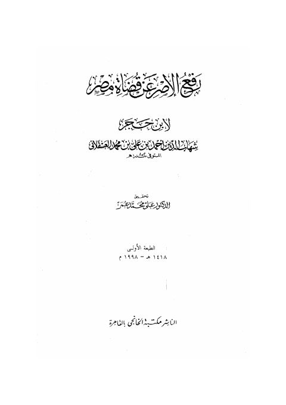
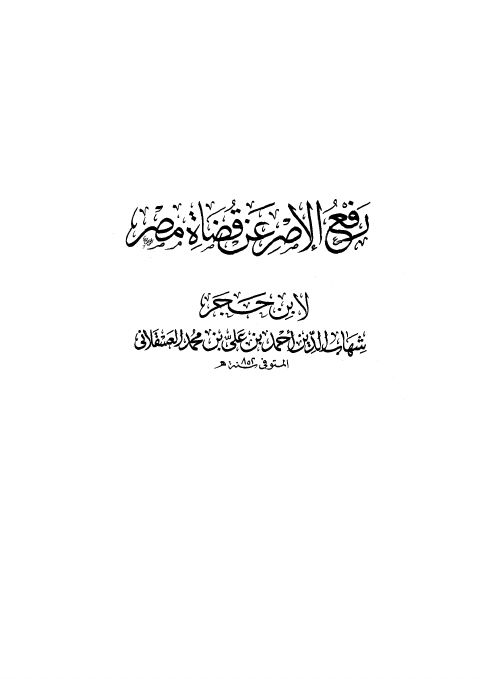

Publishers
مكتبة الخانجي
Publisher
Resources

رفع الإصر عن قضاة مصر
رفع الإصر عن قضاة مصر
أحمد بن محمد بن علي بن حجر العسقلاني

رفع الإصر عن قضاة مصر- ط. الخانجي
رفع الإصر عن قضاة مصر- ط. الخانجي
أحمد بن علي بن حجر العسقلاني